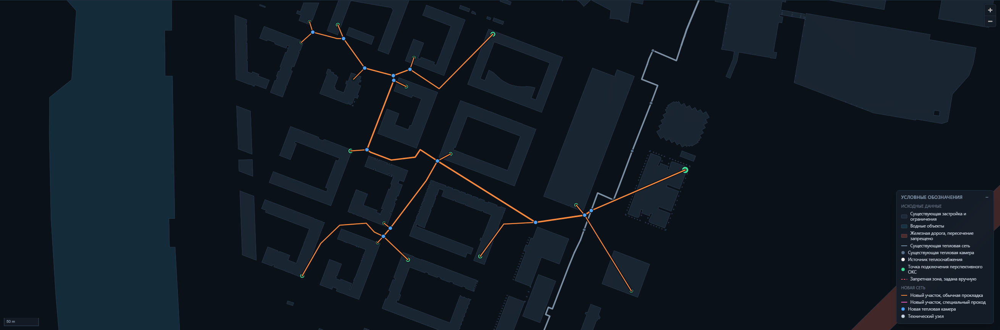

Выбрать места присоединения, проложить трассы, подобрать диаметры и сравнить варианты между собой.

| Находка | Следствие для решения |
|---|---|
| Все 17 точек подключения лежат внутри зданий, в 0,06–8,3 м от границы | Это контуры самих подключаемых объектов. Считать их препятствием — значит закрыть подход к своей же точке буфером в 5 м. Приложение это и разрешает: один финальный прямой участок от границы полигона до точки |
| Диаметры камер во входных данных не заданы | Восстанавливаются по наибольшему условному диаметру примыкающих участков, как и требует раздел 3.2, и попадают в протокол допущений |
| Требования изменились посреди работы: 18.09 техническое приложение переписали | Справочник вынесен в конфигурацию, модель результата отделена от выгрузки. Поэтому правки заняли день, а не неделю |
Сеточный поиск при любом шаге даёт лесенку, а её сглаживание рискует нарушить только что соблюдённый клиренс.
| Граф на конкурсном наборе | |
|---|---|
| Полигонов препятствий | 88 |
| Вершин контуров | 6 288 |
| Узлов графа | 3 545 |
| Рёбер | 96 027 |
| Полный расчёт | около 23 с |
Рёбра строятся только между выпуклыми вершинами и только в пределах радиуса видимости. Без этого ограничения граф растёт квадратично и перестаёт помещаться во время расчёта.
| Разбиение | Показатель S | Чем отличается от победителя |
|---|---|---|
| все объекты одной сетью | 12,145 | 1 728,4 м новой сети, 29 участков, 13 камер |
| две независимые части | 12,244 | экономит восемнадцать метров трубы, но требует на две камеры больше |
| три независимые части | 12,491 | трасса почти на семьдесят метров длиннее |
Выигрывает не самая короткая трасса, а самая дешёвая по сумме трубы и камер.
| Затравок | Разбиений | Кандидатов врезки | Время | Лучший S |
|---|---|---|---|---|
| 8 | 3 | 12 | 19 с | 13,895 |
| 16 | 5 | 24 | 79 с | 13,895 |
| 32 | 6 | 36 | 284 с | 13,895 |
Развилки стояли на углах обогнутых зданий — там, где сошлись два кратчайших пути. В задаче Штейнера оптимальная развилка лежит в точке Ферма, где рёбра расходятся под 120°.
Минимизируем не длину, а стоимость: метр ДУ 300 вдвое дороже метра ДУ 65, поэтому ствол тянет развилку сильнее отводов.
| Было | Стало | |
|---|---|---|
| Показатель S | 13,895 | 13,590 |
| Новая сеть лучшего варианта | 1884,0 м | 1830,9 м |
Эффект измерен на первой редакции приложения, где показатель считался вместе с реконструкцией, поэтому числа приведены как исторические. Механизм от смены редакции не изменился: развилка по-прежнему ставится туда, где сумма стоимости примыкающих труб минимальна.
| Правило | Как соблюдается |
|---|---|
| К камере не более четырёх участков | Встроено в построение: узел без запаса исключается из поиска. Учтено и то, что независимые части сети могут выбрать одну камеру |
| Трассы не пересекаются вне общего узла | В точке пересечения ставится камера, ветви объединяются. Сеть при этом становится короче |
| Точка подключения — конец ветви | Транзит через чужое здание запрещён: развилка обязана быть в камере, а не в чужом ИТП |
| Предельная длина части одного диаметра | Обход дерева с накоплением длины; при исчерпании диаметр растёт, ставится технический узел |
| Камера присоединения лучшего варианта | Расход | ДУ | Примыканий |
|---|---|---|---|
| новая камера в участке 126 существующей сети | 488,72 т/ч | 400 | 4 |
| Состав решения | |
|---|---|
| Новая сеть | 1 728,4 м, 29 участков |
| Новые тепловые камеры | 13 |
| Врезки в существующие камеры | нет |
| Время расчёта | около 23 с |
| Независимых проверок выгрузки | 1 526 |
Присоединение выполнено новой камерой, её стоимость включает присоединение. Нарушений в проверке нет.
| Из чего сложилась стоимость | млн ₽ |
|---|---|
| Новые участки сети | 197,6 |
| Новые тепловые камеры | 51,0 |
| Врезки в существующие камеры | 0 |
| Штраф за неподключённые объекты | 0 |
| Итого | 248,6 |
Kгл растёт на 10 % за каждый метр глубже трёх.Если манёвр не помещается — пересечение приходится на первые метры нитки, — сервис не подставляет желаемую глубину. В выгрузку идёт та, на которой труба проходит, вместе с пересчитанным просветом: результат описывает построенное, а не намерение.
| Расчёт с учётом глубины | |
|---|---|
| Лучший вариант | две независимые части |
| Новая сеть | 1 710,2 м |
| Показатель S | 12,244 |
| Глубины участков | от 2,04 до 3,0 м |
| Время расчёта | около 23 с |
Режим ранжируется отдельно, как требует раздел 5 приложения: с двумерными вариантами он в одно ранжирование не сводится.
«А если здесь копать нельзя?» Щелчок по карте — и место становится запретной зоной. Сеть строится заново, целиком: это не правка результата руками, которую запрещает задание, а дополнительное исходное условие.
Измерено на скорректированном наборе: запрет радиусом 35 м поперёк самого длинного участка перекладывает трассу, все семнадцать точек остаются подключёнными, а показатель уходит с 12,145 до 12,287, стоимость с 248,6 до 254,3 млн ₽. Цена запрета видна сразу и в деньгах, и в показателе.
«А по чему считать смету?» Рядом с выгрузкой GeoJSON — ведомость объёмов работ: участки с диаметром, длиной и стоимостью, новые камеры с числом примыканий, свод по условным диаметрам и итог. Открывается в Excel двойным щелчком.
«А вы уверены, что существующая сеть выдержит?» Этого расчёта в задаче больше нет: приложение в редакции от 18.09 не определяет текущий расход и резерв пропускной способности существующей сети. До 18.09 мы это считали и умели показать, чего стоило допущение о загрузке сети; когда требование отменили, вместе с расчётом убрали и переключатель из API.
Оставлять в интерфейсе тумблер, который ничего не меняет, хуже, чем убрать его.
«Чем проверено, что выгрузка соответствует приложению?» Отдельной программой, которая читает правила заново, по тексту приложения, а не берёт их из кода сервиса: 1 526 проверок, нарушений нет.
GET /api/v1/reference.Исходный код, документация и выгрузка результата — в репозитории.
Запуск: docker compose up -d --build